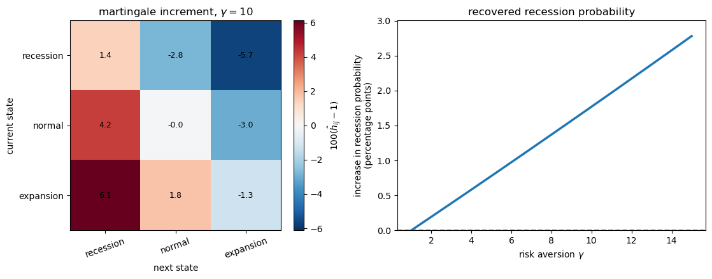
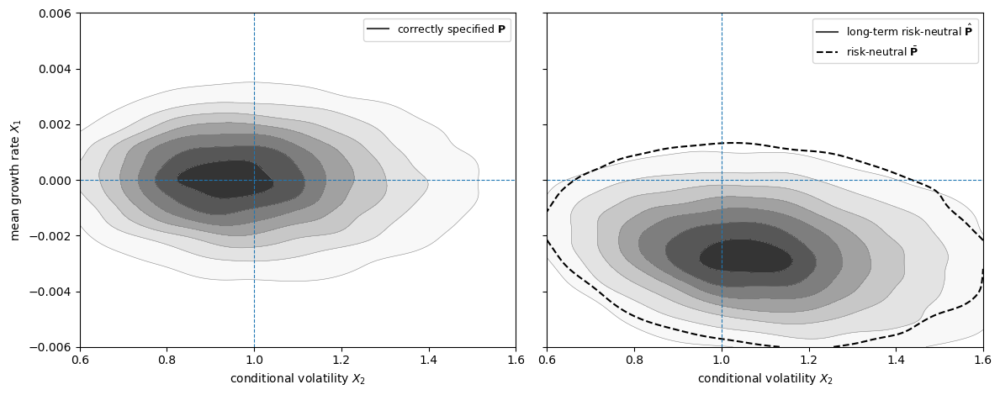
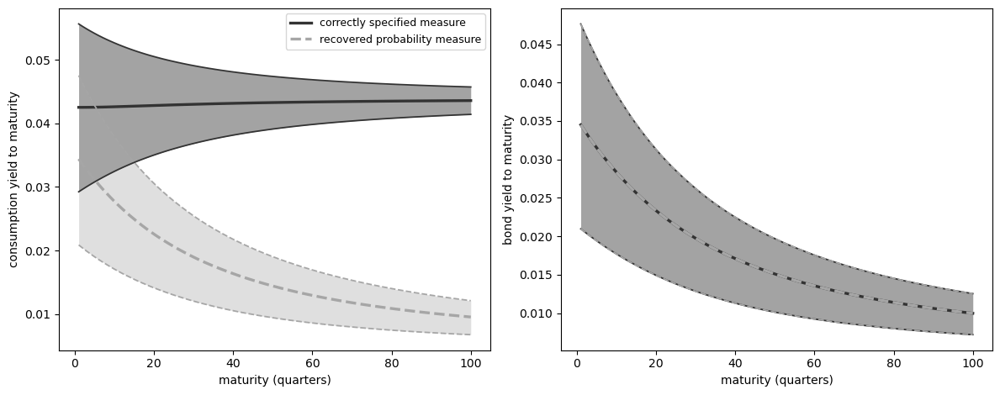

101. Misspecified recovery#
101.1. Overview#
The lecture The Recovery Theorem studies the case in which recovery is valid.
There, transition independence lets us use Arrow prices to separate investors’ beliefs from the pricing kernel.
This lecture asks what the same Perron–Frobenius approach delivers when that restriction is not imposed.
We will keep three probability measures separate.
The first is the correctly specified probability measure, which governs the Markov state in the model.
The second is the one-period risk-neutral probability measure, which comes from normalizing one-period Arrow prices by bond prices.
The third is the probability measure recovered by Perron–Frobenius Theory, also called the long-term risk-neutral measure.
The central question is whether the recovered probability measure equals the correctly specified probability measure.
Borovička et al. [2016] show that, in general, the answer is no.
The paper studies the ratio of the recovered probability measure to the correctly specified probability measure.
The reason is that the stochastic discount factor can contain a martingale component that changes the probability measure.
If that martingale component is identically one, Ross recovery returns the correctly specified transition probabilities.
If it is not identically one, the recovered probability measure absorbs long-term risk adjustments, because martingale increments compound along histories.
In the examples below, the recovered probability measure assigns more probability to adverse long-run-risk states than the correctly specified probability measure.
We will:
use results from The Recovery Theorem without re-proving it,
study misspecification through the martingale component,
show why recursive utility and permanent shocks make the recovered probability measure differ from the correctly specified probability measure,
measure the difference in a long-run risk model.
We will use the following imports.
import numpy as np
import matplotlib.pyplot as plt
from scipy import linalg
from scipy.integrate import solve_ivp
from scipy.stats import gaussian_kde
The next cell contains code inherited from the previous lecture.
It row-normalizes Arrow prices, finds the Perron–Frobenius eigenvalue and positive right eigenvector, and computes stationary distributions.
101.2. Three transition matrices#
Let \(\mathbf{P}=[p_{ij}]\) denote the correctly specified transition matrix and \(\mathbf{Q}=[q_{ij}]\) the Arrow price matrix.
Here “correctly specified” means that \(\mathbf{P}\) is the transition matrix that governs the Markov state in the model.
The one-period stochastic discount factor (SDF) satisfies
We will compare \(\mathbf{P}\) with two probability matrices constructed from \(\mathbf{Q}\).
The first one is the one-period risk-neutral matrix.
It divides each row of \(\mathbf{Q}\) by the price of a one-period discount bond in the current state:
This matrix absorbs one-period risk adjustments into transition probabilities.
The second one is the transition matrix associated with the long-term risk-neutral probability.
It starts from the Perron–Frobenius eigenvalue and positive right eigenvector of \(\mathbf{Q}\).
Let \((\exp(\hat \eta), \hat e)\) solve
Then define
The factor \(\hat e_j/\hat e_i\) is chosen to cancel any SDF component of the form \(\exp(\hat \eta)\hat e_i/\hat e_j\).
The result is a stochastic matrix \(\hat{\mathbf{P}}\).
This construction assumes that \(\mathbf{Q}\) has a unique positive right eigenvector up to scale.
For a finite irreducible nonnegative matrix, the Perron root has a strictly positive right eigenvector unique up to scale.
For long-horizon dominance and convergence, one typically imposes a stronger condition such as primitivity or aperiodicity; the paper uses a positivity condition on \(\sum_{t=0}^{\infty}\lambda^t\mathbf Q^t\).
In general state spaces this guarantee does not carry over: multiple positive eigenfunctions may exist, and an additional selection condition is needed to pin down the long-term risk-neutral measure.
The general framework in the next section makes that selection condition explicit.
Following Borovička et al. [2016], \(\hat{\mathbf{P}}\) is called a long-term risk-neutral transition matrix.
The name means that the Perron–Frobenius eigenvalue and eigenvector isolate the part of pricing that dominates long-maturity Arrow claims.
It is not the same transition matrix as the one-period risk-neutral matrix \(\bar{\mathbf{P}}\).
In The Recovery Theorem, transition independence restricts the SDF to
for a positive vector \(m\) and scalar \(\delta\), which pins down the split between \(s_{ij}\) and \(p_{ij}\).
Here we drop that restriction.
The question is whether the transition matrix associated with the long-term risk-neutral probability, \(\hat{\mathbf{P}}\), still equals the correctly specified matrix \(\mathbf{P}\).
101.2.1. Degenerate Martingale Component#
We start with a three-state economy: recession, normal, and expansion.
The correctly specified transition matrix is deliberately simple.
For trend-stationary consumption and power utility, the SDF is
This is a case where Ross recovery should return the correctly specified transition matrix.
P_true = np.array([
[0.70, 0.25, 0.05],
[0.15, 0.65, 0.20],
[0.05, 0.30, 0.65],
])
c_levels = np.array([0.997, 1.000, 1.003])
state_names = ['recession', 'normal', 'expansion']
δ = -np.log(0.99) # monthly subjective discount rate
γ_power = 5.0 # risk aversion
g_c = 0.002 # monthly trend growth
# Price Arrow claims as actual probabilities times the power-utility SDF
S_power = (
np.exp(-δ - γ_power * g_c)
* (c_levels[None, :] / c_levels[:, None])**(-γ_power)
)
Q_power = S_power * P_true
We now compute the one-period risk-neutral matrix and the transition matrix associated with the long-term risk-neutral probability from the same Arrow price matrix.
P_bar, q_bonds = risk_neutral_probs(Q_power)
η_hat, exp_η, e_hat, P_hat = perron_frobenius(Q_power)
π_true = stationary_dist(P_true)
π_bar = stationary_dist(P_bar)
π_hat = stationary_dist(P_hat)
These two matrices should not be expected to agree.
The row-normalized matrix \(\bar{\mathbf{P}}\) is a short-horizon risk-neutral change of measure: it folds the one-period SDF into transition probabilities, so it generally differs from the correctly specified matrix \(\mathbf{P}\).
The logic comes from the Perron–Frobenius construction in The Recovery Theorem.
In the transition-independent case, the pricing kernel has the form \(s_{ij}=\exp(\hat\eta)\hat e_i/\hat e_j\).
Substituting this into the Perron–Frobenius transition formula gives
Thus the transition matrix \(\hat{\mathbf{P}}\) associated with the long-term risk-neutral probability cancels the transition-independent part of the SDF.
In this power-utility benchmark, the whole SDF has exactly that form, so the remaining martingale increment should be one and \(\hat{\mathbf{P}}\) should coincide with \(\mathbf{P}\).
The next calculation checks this by comparing the Perron–Frobenius eigenfunction with \(c_i^\gamma\) and then computing the ratio \(\hat{\mathbf{P}}/\mathbf{P}\).
Define the one-period martingale increment
When \(\hat h_{ij}=1\) for every transition, \(\hat{\mathbf P}\) and \(\mathbf P\) are the same.
The next section explains why this ratio is the one-period martingale increment.
In the power-utility example, write
Taking \(\hat e_i=c_i^\gamma\), up to scale, gives
so \(\exp(\hat\eta)=A\).
Consequently,
H_power = np.divide(P_hat, P_true, out=np.ones_like(P_true), where=P_true > 0)
e_theory = c_levels**γ_power
print("Perron-Frobenius eigenfunction: numerical vs c^gamma")
for name, e_num, e_th in zip(state_names, e_hat / e_hat[1],
e_theory / e_theory[1]):
print(f"{name:9s}: {e_num:.6f} {e_th:.6f}")
print("\nmartingale increment h_hat = P_hat / P")
print(np.round(H_power, 6))
print("\nconditional means under P")
print(np.round((P_true * H_power).sum(axis=1), 6))
print(f"\nmax |h_hat - 1| = "
f"{np.max(np.abs(H_power[P_true > 0] - 1)):.2e}")
Perron-Frobenius eigenfunction: numerical vs c^gamma
recession: 0.985090 0.985090
normal : 1.000000 1.000000
expansion: 1.015090 1.015090
martingale increment h_hat = P_hat / P
[[1. 1. 1.]
[1. 1. 1.]
[1. 1. 1.]]
conditional means under P
[1. 1. 1.]
max |h_hat - 1| = 1.33e-15
The output separates a short-horizon risk adjustment from the Perron–Frobenius approach.
The one-period risk-neutral matrix \(\bar{\mathbf{P}}\) is close to, but not the same as, the correctly specified matrix \(\mathbf{P}\).
It changes the transition probabilities because one-period Arrow prices include one-period risk adjustments.
By contrast, the long-term risk-neutral matrix \(\hat{\mathbf{P}}\) is exactly the same as \(\mathbf{P}\) in this example.
The calculation confirms why: the martingale increment \(\hat h_{ij}\) is one for every transition.
This is the condition under which Ross recovery returns the correctly specified transition matrix.
In this example, that cancellation exhausts the SDF, so the martingale component is degenerate.
101.3. Martingale Component#
Let \((\hat \eta, \hat e)\) be the Perron–Frobenius eigenvalue exponent and positive right eigenvector of \(\mathbf{Q}\):
The associated long-term risk-neutral transition matrix is
To see whether recovery has changed the probability measure, compare each recovered transition probability with the corresponding correctly specified transition probability.
For feasible transitions with \(p_{ij}>0\), define the one-period martingale increment
If \(\hat h_{ij}>1\), the recovered probability measure assigns more probability to transition \((i,j)\) than the correctly specified probability measure.
If \(\hat h_{ij}<1\), it assigns less probability to that transition.
For a fixed current state \(i\), the numbers \(\hat h_{ij}\) average to one under the correctly specified transition probabilities:
Thus \(\hat h_{ij}\) is a one-period martingale increment.
Multiplying these increments along a history of states gives the ratio of the recovered probability measure to the correctly specified probability measure for the whole history.
That ratio process is a martingale, which is why the last term in (101.5) is called a martingale component.
Using (101.1), (101.3), and (101.4), the one-period SDF can be written as
The Perron–Frobenius approach therefore separates the SDF into:
Part |
Role |
|---|---|
\(\exp(\hat\eta)\) |
deterministic long-run discounting |
\(\hat e_i / \hat e_j\) |
state-dependent long-run term |
\(\hat h_{ij}\) |
martingale increment that changes probabilities |
If \(\hat h_{ij}=1\) for every feasible transition, then the transition matrix associated with the recovered probability measure and the correctly specified transition matrix are the same.
This is the condition under which Ross recovery returns the correctly specified transition matrix.
Proposition 101.1 (Finite-state martingale component)
Under the finite-state assumptions used in this lecture, for a Markov model with correctly specified transition matrix \(\mathbf{P}\) and Arrow matrix \(\mathbf{Q}\), the probability measure recovered by Perron–Frobenius Theory returns the correctly specified transition matrix if and only if \(\hat h_{ij}=1\) for every transition with \(p_{ij}>0\).
Equivalently, recovery returns the correctly specified transition matrix if and only if the SDF in (101.5) has no nonconstant martingale component:
Proof. Using \(q_{ij}=s_{ij}p_{ij}\),
Thus \(\hat{\mathbf{P}}=\mathbf{P}\) if and only if \(\hat h_{ij}=1\) on every feasible transition.
This condition is the same as saying that the SDF can be written as (101.5) with no extra martingale increment.
This finite-state implication is a special case of the paper’s general identification result.
If a pair \((S,P)\) explains asset prices and \(H\) is a positive multiplicative martingale, then the same asset prices are also explained by the changed probability measure \(P^H\) together with the adjusted stochastic discount factor
More generally, any strictly positive martingale can change probability measures, but multiplicativity preserves the Markov structure used here.
Thus Arrow prices alone cannot usually distinguish a change in beliefs from a change in the SDF.
Ross recovery becomes an identification result only after imposing a restriction such as
which rules out a nontrivial martingale component.
The power-utility example above illustrates the proposition.
In that benchmark, the martingale increment \(\hat h_{ij}\) is identically one.
101.4. From matrices to the general framework#
The finite-state calculation has three objects:
the correctly specified transition probabilities \(p_{ij}\),
the SDF increments \(s_{ij}\),
the Arrow prices \(q_{ij}=s_{ij}p_{ij}\).
It also has one diagnostic object:
The numbers \(\hat h_{ij}\) are one-period martingale increments.
They change the probability of a one-period transition from \(p_{ij}\) to \(\hat p_{ij}=\hat h_{ij}p_{ij}\).
The general framework in Borovička et al. [2016] does the same thing without assuming that states are finite.
The transition matrix becomes a Markov probability measure, the Arrow price matrix becomes a family of pricing operators, and the one-period ratios \(\hat h_{ij}\) become increments of a positive multiplicative martingale.
The point of this section is to build that dictionary.
101.4.1. Probability space and state#
Start with a probability space \((\Omega,\mathcal F,P)\).
Here \(P\) is the correctly specified probability measure.
In the rational-expectations interpretation of the paper, this is the actual, or original, probability measure governing the state.
In the finite-state section, \(P\) was represented by the transition matrix \(\mathbf P=[p_{ij}]\).
The index set is either discrete time, \(\mathbb T=\{0,1,2,\ldots\}\), or continuous time, \(\mathbb T=\mathbb R_+\).
The main state process is \(X=\{X_t:t\in\mathbb T\}\), which is stationary and Markov under \(P\).
A second process \(W=\{W_t:t\in\mathbb T\}\) records shocks that drive \(X\) and other economic quantities.
In discrete time, the shock increment between dates \(t\) and \(t+1\) is
The known function \(\phi_x\) maps today’s state and the next shock increment into tomorrow’s state.
The discrete-time state evolution is
The conditional law generated by this equation is the general-state replacement for the finite-matrix row indexed by the current state \(x\).
Assumption 101.1 (Markov state and shock increments)
The process \(X\) is ergodic under \(P\).
The conditional distribution of \(\Delta W_{t+1}\) given \(X_t\) is time invariant and independent of past shock histories conditioned on \(X_t\).
The filtration \(\{\mathcal F_t\}\) is generated by the initial condition \(X_0\) and by the history of shocks through date \(t\).
101.4.2. Information and \(Y\)#
The Markov state and the information that reveals shocks need not coincide.
The state \(X_t\) is observed at date \(t\).
The next shock \(\Delta W_{t+1}\) need not be directly observed from the pair \((X_t,X_{t+1})\).
If \((X_t,X_{t+1})\) does reveal \(\Delta W_{t+1}\), then \(X\) alone carries the relevant shock information.
If it does not, introduce an auxiliary process \(Y=\{Y_t\}\) with stationary increments.
The known function \(\phi_y\) maps today’s state and the next shock increment into the increment of \(Y\).
The discrete-time evolution for the auxiliary increment is
The pair \((X_{t+1},Y_{t+1}-Y_t)\) is then rich enough, together with \(X_t\), to recover the shock increment \(\Delta W_{t+1}\).
This device lets the model handle shocks or growth components that affect payoffs and SDFs but are not fully summarized by the next Markov state alone.
Write the enlarged process as \(Z=(X,Y)\).
The process \(Z\) is Markov with a triangular structure: the conditional distribution of \((X_{t+1},Y_{t+1}-Y_t)\) depends on the past only through \(X_t\).
Histories of \(Z\), together with \(X_0\), generate the same information as the shock history.
This is why the next Perron–Frobenius problem can first be posed with eigenfunctions of \(X\) alone.
The section Additional state vector later returns to what changes when the eigenfunction is allowed to depend on \(Y\) as well.
101.4.3. Multiplicative functionals#
The general framework needs a way to describe objects that compound over time.
This is the role of a positive multiplicative functional \(M=\{M_t\}\).
Its log increment is a function of today’s state and the next shock increment:
Equivalently,
Thus \(M_t/M_0\) is a product of positive one-period increments.
This is the Condition-1 version of a multiplicative functional used in the paper.
The formal definition is slightly broader, but this form covers the models studied below.
Under Assumption 101.1, the logarithm of \(M\) has stationary increments.
Products and reciprocals of positive multiplicative functionals are again positive multiplicative functionals.
Exponential functions of linear combinations of the components of \(Y\) are examples.
Stochastic discount factors, stochastic growth factors, and positive multiplicative martingales are all modeled this way.
In the finite-state model, the SDF increment \(s_{ij}\) is one example of a multiplicative-functional increment.
The ratio \(h_{ij}\) that changes probabilities is another.
101.4.4. Stochastic discount factors and pricing operators#
A stochastic discount factor \(S=\{S_t\}\) is a positive multiplicative functional with \(S_0=1\) and finite first moments conditional on \(X_0\).
Let \(\Phi_t\) be a bounded payoff measurable with respect to the date-\(t\) information.
The date-\(\tau\) price of \(\Phi_t\) is
The ratio \(S_t/S_\tau\) is the stochastic discount factor from date \(t\) back to date \(\tau\).
If the payoff is a bounded function \(f(X_t)\) of the future Markov state, this pricing formula defines a horizon-\(t\) operator \(Q_t\) by
This operator is the general-state analogue of multiplying a payoff vector by the Arrow-price matrix \(\mathbf Q\).
To see the connection, suppose again that the state space is finite and \(t=1\).
Then
Thus \(Q_1\) is exactly the matrix \(\mathbf Q\).
In discrete time, the multiplicative property of \(S\) implies that \(Q_t\) is obtained by applying the one-period operator \(Q_1\) repeatedly.
In continuous time, the family \(\{Q_t:t\geq0\}\) is a semigroup of pricing operators.
101.4.5. Martingales and equivalent probability measures#
Different stochastic discount factor / probability pairs can produce the same pricing operators, and that flexibility is the source of the identification problem.
For the Markov setting used here, the probability changes of interest are generated by positive multiplicative martingales.
At the level of probability changes, let \(H=\{H_t\}\) be a strictly positive martingale with \(E[H_0]=1\) under \(P\).
For an event \(A\) observable by date \(\tau\), the changed probability measure \(P^H\) is defined by
The law of iterated expectations makes this definition consistent across dates.
When \(H\) is also a multiplicative functional, making it a multiplicative martingale, the change of probability preserves the Markov structure of \(Z\).
The SDF that represents the same prices under \(P^H\) is
Thus the same pricing operators can be represented by the pair \((S,P)\) or by the pair \((S^H,P^H)\).
In the finite-state model, this is just
so that
The same Arrow prices can therefore be explained by changing the probability measure and offsetting that change in the SDF.
This is also the precise sense in which Arrow prices alone do not identify beliefs.
101.4.6. What Perron–Frobenius recovers#
Now return to the Perron–Frobenius step.
The finite-state equation was (101.2).
The general-state replacement is an eigenfunction problem for the pricing operators: find a scalar \(\hat\eta\) and a positive function \(\hat e\) such that, for every horizon \(t\),
The positive function \(\hat e\) is the general-state counterpart of the Perron–Frobenius eigenvector.
The scalar \(\hat\eta\) is the log eigenvalue.
In finite states, \(\hat e\) is just a positive vector with one entry for each state.
In general state spaces, \(\hat e(x)\) is a positive function of the current state.
Its job is to record the state-dependent part of long-horizon valuation.
Equation (101.6) says that a future payoff equal to \(\hat e(X_t)\) has date-0 price \(\exp(\hat\eta t)\hat e(X_0)\).
Thus \(\hat\eta\) gives the common growth or discount rate, while \(\hat e\) gives the state-dependent scaling.
Since eigenfunctions are defined only up to scale, uniqueness always means uniqueness up to multiplication by a positive constant.
In general state spaces, existence of a positive eigenfunction is also a substantive condition.
The eigenfunction equation implies the conditional moment restriction
Use this restriction to define
This process is a martingale because, for \(t\geq \tau\),
The process is positive because \(S\) and \(\hat e\) are positive.
Its one-period increment is
In the finite-state model, when \(X_t=i\) and \(X_{t+1}=j\), (101.8) becomes
This is the same three-component decomposition as (101.5).
In finite states, (101.5) is equivalent to
The only change is notation: \(\hat h_{ij}\) is the one-period density ratio in a finite Markov chain, while \(\hat H_{t+1}/\hat H_t\) is the corresponding one-period density ratio in the general Markov setting.
Conditional on \(X_0\), the likelihood ratio for histories through date \(t\) is \(\hat H_t/\hat H_0\).
For the unconditional measure on \(\mathcal F_t\), the Radon–Nikodym density is \(\hat H_t\), where \(\hat H_0\) adjusts the initial distribution.
If \(\hat H_{t+1}/\hat H_t\) is not identically one, the recovered probability measure differs from the correctly specified probability measure.
We show the restriction that rules out this difference in the next section.
101.4.7. Selection and recovery#
In finite irreducible matrix problems, Perron–Frobenius theory gives a unique positive eigenvector up to scale, so the recovered transition matrix is pinned down by \(\mathbf Q\).
In general state spaces, a positive eigenfunction need not exist, and multiple positive eigenfunctions may solve the same pricing operator problem when one does.
The paper therefore imposes a selection condition on the probability measure induced by the candidate eigenfunction.
Assumption 101.2 (Ergodicity of the recovered measure)
The process \(X\) is stationary and ergodic under \(P^{\hat H}\), the probability measure induced by the multiplicative martingale \(\hat H\) defined in the previous section.
Proposition 101.2 (Uniqueness of the Perron–Frobenius solution)
There is at most one solution \((\hat e, \hat\eta)\) to the Perron–Frobenius problem such that \(X\) is stationary and ergodic under the induced probability measure \(P^{\hat H}\).
This selected solution, when it exists, identifies the long-term risk-neutral measure.
It does not by itself identify subjective beliefs.
To make recovery identify beliefs, an additional restriction is needed on the SDF.
The restriction used by Ross recovery is the paper’s Condition 4:
Assumption 101.3
Let
for some positive function \(m\) and real number \(\delta\).
This is the transition-independence restriction from The Recovery Theorem, imposed on the SDF representation whose probability measure one wants to recover.
Under this restriction, setting \(\hat e=1/m\) and \(\hat\eta=-\delta\) gives
Thus the martingale component is identically one after normalization.
This is the general-state version of the finite-state condition \(\hat h_{ij}=1\) for every feasible transition.
If this martingale is not identically one, the recovered probability measure absorbs it and generally differs from the correctly specified probability measure.
We will see a few important examples of this in the next section.
The section Additional state vector returns to what happens when the eigenfunction is allowed to depend on the auxiliary process \(Y\).
101.4.8. Continuous-time version#
Let’s briefly introduce the model in continuous time before discussing examples where recovery fails.
We introduce the diffusion notation because the long-run risk example below is written in continuous time.
The objects are the same as before:
\(X\) is the Markov state,
\(Y\) records additional growing or shock-revealing components,
\(M\) is a positive multiplicative functional, such as an SDF, a cash-flow growth process, or a martingale used to change probabilities.
In the continuous-time version, \(W\) is a Brownian motion.
The state, auxiliary process, and multiplicative functional satisfy
Here \(\mu_x\) and \(\mu_y\) are drift functions, while \(\sigma_x\) and \(\sigma_y\) are shock-exposure matrices.
The function \(\beta\) is the drift of \(\log M\), and \(\alpha\) is the Brownian shock exposure of \(\log M\).
The invertibility assumption on the stacked shock-exposure matrix is the continuous-time counterpart of the discrete-time condition that \((X_{t+1},Y_{t+1}-Y_t)\) reveals the shock increment.
It lets the history of \(Z=(X,Y)\) reveal the Brownian information.
For \(M\) to be a local martingale, its drift must satisfy
This follows from Ito’s formula:
A local martingale has zero drift in \(dM_t/M_t\), which gives the displayed restriction.
Additional integrability conditions then ensure that this local martingale is a true martingale.
Under the probability measure induced by a martingale \(H\) with this exposure \(\alpha\), \(\widetilde W_t=W_t-\int_0^t\alpha(X_s)ds\) is Brownian.
With this sign convention, the drift of \(X\) changes from \(\mu_x\) to \(\mu_x+\sigma_x\alpha\), and the drift of \(Y\) changes from \(\mu_y\) to \(\mu_y+\sigma_y\alpha\).
This is the continuous-time analogue of replacing \(p_{ij}\) by \(h_{ij}p_{ij}\) in the finite-state model.
The Markov and triangular structure of \(Z\) is preserved, which is why the same Perron–Frobenius decomposition can be applied.
101.5. When the recovery fails#
Now let’s discuss a few examples where the recovered probability measure differs from the correctly specified probability measure.
101.5.1. Recursive utility#
We now use the martingale component to see when the recovered probability measure differs from the correctly specified probability measure.
In the previous example, all risk adjustment in the SDF could be written as a ratio of a function of today’s state to a function of tomorrow’s state.
The Perron–Frobenius transition formula cancels exactly that kind of term.
Recursive utility adds a continuation-value term.
The key point is that this term behaves like the martingale increment defined above.
For the unit-EIS Epstein–Zin case in Borovička et al. [2016], with \(C_t=\exp(g_c t)c(X_t)\), write the translated continuation value as \(V_t=g_c t+v(X_t)\), and define
The SDF is
In this unit-EIS example, the Perron–Frobenius eigenfunction is \(\hat e_j=c_j\) and \(\hat\eta=-(\delta+g_c)\).
Applying the Perron–Frobenius transition formula therefore leaves
The denominator is the conditional expectation of \(v_j^*\) given current state \(i\).
Therefore the last fraction has conditional mean one under \(\mathbf{P}\).
It is therefore a martingale increment.
When \(v^*\) is not constant, that ratio varies across next-period states.
That variation is why the probability measure recovered by Perron–Frobenius Theory no longer gives the correctly specified transition matrix.
The next cell solves the finite-state continuation-value equation and builds the SDF.
def solve_ez_unit_eis(P, c, δ, γ, g_c, tol=1e-12, max_iter=10_000):
"""Finite-state unit-EIS Epstein-Zin continuation values and SDF."""
β = np.exp(-δ)
log_c = np.log(c)
n = len(c)
flow = (1 - β) * log_c + β * g_c
if abs(γ - 1) < 1e-10:
v = linalg.solve(np.eye(n) - β * P, flow)
v_star = np.ones(n)
Pv_star = np.ones(n)
else:
v = log_c.copy()
for _ in range(max_iter):
v_star = np.exp((1 - γ) * v)
Pv_star = P @ v_star
v_new = flow + β / (1 - γ) * np.log(Pv_star)
if np.max(np.abs(v_new - v)) < tol:
v = v_new
break
v = v_new
else:
raise ValueError("Epstein-Zin fixed point did not converge.")
v_star = np.exp((1 - γ) * v)
Pv_star = P @ v_star
S = (
np.exp(-δ - g_c)
* (c[:, None] / c[None, :])
* (v_star[None, :] / Pv_star[:, None])
)
return v, v_star, S
At log utility, \(v^*\) is constant and the martingale increment is one.
As risk aversion rises, continuation values matter more.
The recovered probability measure then differs more from the correctly specified probability measure.
To make the mechanism visible in a small three-state example, the figure below uses the more dispersed consumption vector
The heatmap reports percentage deviations of the martingale increment from one: \(100(\hat h_{ij}-1)\).
Positive entries are transitions that receive more probability under the recovered probability measure than under the correctly specified probability measure.
The right panel reports the increase in the recovered recession probability, measured in percentage points.
c_recursive = np.array([0.85, 1.00, 1.15])
γ_demo = 10.0
_, _, S_demo = solve_ez_unit_eis(P_true, c_recursive, δ, γ_demo, g_c)
Q_demo = S_demo * P_true
H_demo, _, _, P_hat_demo = martingale_increment(Q_demo, P_true)
H_dev = 100 * (H_demo - 1)
γ_grid = np.linspace(1, 15, 80)
rec_prob = []
for γ in γ_grid:
_, _, S_g = solve_ez_unit_eis(P_true, c_recursive, δ, γ, g_c)
Q_g = S_g * P_true
_, _, _, P_hat_g = martingale_increment(Q_g, P_true)
rec_prob.append(stationary_dist(P_hat_g)[0])
rec_prob = np.array(rec_prob)
rec_prob_gain = 100 * (rec_prob - π_true[0])
fig, axes = plt.subplots(1, 2, figsize=(12, 4.5))
bound = np.max(np.abs(H_dev))
im = axes[0].imshow(H_dev, cmap='RdBu_r', vmin=-bound, vmax=bound)
axes[0].set_xticks(range(3))
axes[0].set_yticks(range(3))
axes[0].set_xticklabels(state_names, rotation=20)
axes[0].set_yticklabels(state_names)
axes[0].set_xlabel('next state')
axes[0].set_ylabel(r'current state')
axes[0].set_title(r'martingale increment, $\gamma=10$')
for i in range(3):
for j in range(3):
axes[0].text(j, i, f"{H_dev[i, j]:.1f}",
ha='center', va='center', fontsize=9)
plt.colorbar(im, ax=axes[0], fraction=0.046, pad=0.04,
label=r'$100(\hat h_{ij}-1)$')
axes[1].plot(γ_grid, rec_prob_gain, lw=2.5)
axes[1].axhline(0, ls='--', lw=1.5, color='0.5')
axes[1].set_xlabel(r"risk aversion $\gamma$")
axes[1].set_ylabel('increase in recession probability\n(percentage points)')
axes[1].set_title('recovered recession probability')
axes[1].set_ylim(0, rec_prob_gain.max() * 1.08)
plt.tight_layout()
plt.show()

Fig. 101.1 Recursive utility generates a nonconstant martingale increment.#
Recursive utility makes the recovered probability measure assign more probability to recession transitions.
At \(\gamma=10\), transitions into recession receive more probability under the recovered probability measure, while transitions into expansion receive less.
As risk aversion rises, the stationary recession probability under the recovered probability measure moves further above its correctly specified value.
Thus, as the continuation-value term creates a nonconstant \(\hat h_{ij}\), the transition matrix associated with the long-term risk-neutral probability no longer equals the correctly specified transition matrix.
101.5.2. Permanent Shocks#
Recursive utility gives one nonconstant martingale component.
Permanent shocks provide another.
Suppose consumption has a permanent shock,
where \(\varepsilon_{t+1}\) is independent over time.
With power utility, the SDF contains
The middle term depends only on the current and next Markov states.
It is a ratio of state functions, so the Perron–Frobenius transition formula can cancel it.
The permanent shock term depends on the new shock \(\varepsilon_{t+1}\).
Because that shock is not summarized by the finite Markov state in this construction, there is no state function whose ratio can cancel it.
After dividing by its conditional mean, the shock term becomes a martingale increment:
Thus permanent consumption shocks can make the recovered probability measure differ from investors’ beliefs, even under ordinary power utility.
This statement is relative to the Markov state used in the recovery procedure.
Enlarging the state or information structure to account for the shock can accommodate it, but doing so leads to the identification problem discussed in Additional state vector.
101.5.3. Long-run risk#
We now move from small finite-state examples to a standard continuous-time macro-finance model.
The model is the Bansal–Yaron long-run risk model, using the calibration reported by Borovička et al. [2016].
The point is to compare the recovered probability measure with the correctly specified probability measure in a standard macro-finance model.
The construction has the same structure as before.
We first write the correctly specified state dynamics, then compute the probability measure implied by the Perron–Frobenius approach.
The state vector \(X_t=(X_{1t},X_{2t})'\) follows
Here \(X_1\) is predictable consumption growth and \(X_2\) is stochastic volatility.
The representative agent has Epstein–Zin utility with unit elasticity of intertemporal substitution.
The continuation value introduces the continuous-time analogue of the martingale component above.
We denote that process by \(H^*\), and the SDF satisfies
Here \(H^*\) is the continuation-value martingale entering the Epstein–Zin SDF.
The multiplicative martingale \(\hat H\) associated with the Perron–Frobenius problem is obtained only after also incorporating the Perron–Frobenius eigenfunction.
In models with martingale components in consumption growth, \(H^*\) and \(\hat H\) need not coincide.
The next cell sets the calibration.
lrr_params = dict(
δ=0.002,
γ=10.0,
μ11=-0.021,
μ12=0.0,
μ22=-0.013,
ι1=0.0,
ι2=1.0,
σ1=np.array([0.0, 0.00034, 0.0]),
σ2=np.array([0.0, 0.0, -0.038]),
β_c0=0.0015,
β_c1=1.0,
β_c2=0.0,
α_c=np.array([0.0078, 0.0, 0.0]),
)
The next code block computes how the different probability measures change the drift of the state vector.
The first quantity is the continuation value.
In this affine model, the translated continuation value is linear in the state:
This is why we call \(v_1\) and \(v_2\) slopes.
They are the derivatives of the continuation value with respect to predictable growth and volatility.
These slopes enter the continuation-value martingale \(H^*\).
In the code, this martingale has shock exposure
Since the SDF is \(d\log S_t=-\delta dt-d\log C_t+d\log H_t^*\), its shock exposure is
This vector \(\alpha_S\) drives the one-period risk-neutral change of measure.
The second quantity is the Perron–Frobenius eigenfunction.
It is exponential-affine:
Thus \(e_1\) and \(e_2\) are slopes of the log eigenfunction.
Because \(X_1\) and \(X_2\) have shock loadings \(\sigma_1\) and \(\sigma_2\), the Perron–Frobenius eigenfunction contributes the additional shock exposure
Therefore the one-period risk-neutral dynamics use only \(\alpha_S\), while the dynamics under the long-term risk-neutral measure use
The functions below follow this order: compute \((v_1, v_2)\), compute \(\alpha_S\) and \((e_1, e_2)\), and then translate these shock exposures into drifts for \(X\).
def solve_value_function(p):
"""Slopes of the affine continuation value."""
δ, γ = p["δ"], p["γ"]
μ11, μ12, μ22 = p["μ11"], p["μ12"], p["μ22"]
σ1, σ2 = p["σ1"], p["σ2"]
β_c1, β_c2 = p["β_c1"], p["β_c2"]
α_c = p["α_c"]
# v1 is the coefficient on predictable growth in v(x).
v1 = β_c1 / (δ - μ11)
# v2 is the coefficient on volatility.
# In the affine model it is the stable root of a scalar quadratic.
A_vec = α_c + σ1 * v1
B_vec = σ2
a = 0.5 * (1 - γ) * np.dot(B_vec, B_vec)
b = (μ22 - δ) + (1 - γ) * np.dot(A_vec, B_vec)
c = β_c2 + μ12 * v1 + 0.5 * (1 - γ) * np.dot(A_vec, A_vec)
disc = b**2 - 4 * a * c
if disc < 0:
raise ValueError("Value function does not exist for these parameters.")
v2 = (-b - np.sqrt(disc)) / (2 * a)
return v1, v2
def solve_pf_lrr(p, v1, v2):
"""Perron-Frobenius eigenfunction slopes and the SDF diffusion loading."""
δ, γ = p["δ"], p["γ"]
μ11, μ12, μ22 = p["μ11"], p["μ12"], p["μ22"]
ι1, ι2 = p["ι1"], p["ι2"]
σ1, σ2 = p["σ1"], p["σ2"]
α_c = p["α_c"]
β_c0, β_c1, β_c2 = p["β_c0"], p["β_c1"], p["β_c2"]
# Continuation-value martingale exposure and SDF exposure.
α_h_star = (1 - γ) * (α_c + σ1 * v1 + σ2 * v2)
α_s = -α_c + α_h_star
# Drift coefficients of log S before the Perron-Frobenius decomposition.
β_s11 = -β_c1
β_s12 = -β_c2 - 0.5 * np.dot(α_h_star, α_h_star)
β_s0 = -δ - β_c0 - 0.5 * ι2 * np.dot(α_h_star, α_h_star)
# e1 and e2 are coefficients in log e(x) = e0 + e1 x1 + e2 x2.
e1 = -β_s11 / μ11
# e2 solves the remaining quadratic from the Perron-Frobenius eigenvalue equation.
const = (β_s12 + 0.5 * np.dot(α_s, α_s)
+ e1 * (μ12 + np.dot(σ1, α_s))
+ 0.5 * e1**2 * np.dot(σ1, σ1))
lin = μ22 + np.dot(σ2, α_s) + e1 * np.dot(σ1, σ2)
quad = 0.5 * np.dot(σ2, σ2)
disc = lin**2 - 4 * quad * const
roots = [(-lin - np.sqrt(disc)) / (2 * quad),
(-lin + np.sqrt(disc)) / (2 * quad)]
candidates = []
for e2 in roots:
eta = (β_s0 - β_s11 * ι1 - β_s12 * ι2
- e1 * (μ11 * ι1 + μ12 * ι2) - e2 * μ22 * ι2)
candidates.append((eta, e2))
# Choose the solution that gives the smaller eigenvalue exponent.
eta, e2 = min(candidates)
return e1, e2, eta, α_s
def recovered_lrr_dynamics(p, e1, e2, α_s):
"""State dynamics under the long-term risk-neutral measure."""
μ11, μ12, μ22 = p["μ11"], p["μ12"], p["μ22"]
ι1, ι2 = p["ι1"], p["ι2"]
σ1, σ2 = p["σ1"], p["σ2"]
# The long-term risk-neutral measure uses the SDF exposure plus the eigenfunction exposure.
α_h = α_s + σ1 * e1 + σ2 * e2
# A diffusion change of measure shifts each drift by sigma_i dot alpha_h.
μ_hat_11 = μ11
μ_hat_12 = μ12 + np.dot(σ1, α_h)
μ_hat_22 = μ22 + np.dot(σ2, α_h)
# Rewrite the shifted drift in mean-reversion form.
ι_hat_2 = (μ22 / μ_hat_22) * ι2
ι_hat_1 = ι1 + (μ12 * ι2 - μ_hat_12 * ι_hat_2) / μ11
return dict(
μ11=μ_hat_11,
μ12=μ_hat_12,
μ22=μ_hat_22,
ι1=ι_hat_1,
ι2=ι_hat_2,
σ1=σ1,
σ2=σ2,
α_h=α_h,
)
def risk_neutral_lrr_dynamics(p, α_s):
"""State dynamics under the one-period risk-neutral measure."""
μ11, μ12, μ22 = p["μ11"], p["μ12"], p["μ22"]
ι1, ι2 = p["ι1"], p["ι2"]
σ1, σ2 = p["σ1"], p["σ2"]
# The one-period risk-neutral measure uses only the SDF exposure.
μ_bar_11 = μ11
μ_bar_12 = μ12 + np.dot(σ1, α_s)
μ_bar_22 = μ22 + np.dot(σ2, α_s)
# Rewrite the shifted drift in mean-reversion form.
ι_bar_2 = (μ22 / μ_bar_22) * ι2
ι_bar_1 = ι1 + (μ12 * ι2 - μ_bar_12 * ι_bar_2) / μ11
return dict(
μ11=μ_bar_11,
μ12=μ_bar_12,
μ22=μ_bar_22,
ι1=ι_bar_1,
ι2=ι_bar_2,
σ1=σ1,
σ2=σ2,
)
For the calibration used here, the recovered probability measure changes the long-run state distribution.
It lowers the mean of expected growth and raises the mean of volatility.
v1, v2 = solve_value_function(lrr_params)
e1, e2, η_lrr, α_s = solve_pf_lrr(lrr_params, v1, v2)
dyn_hat = recovered_lrr_dynamics(lrr_params, e1, e2, α_s)
dyn_bar = risk_neutral_lrr_dynamics(lrr_params, α_s)
print(f"value slopes: v1 = {v1:.4f}, v2 = {v2:.4f}")
print(f"eigenfunction coefficients: e1 = {e1:.4f}, e2 = {e2:.4f}")
print(f"log eigenvalue: eta = {η_lrr:.6f} "
f"(annualized {12 * η_lrr:.4f})")
print()
print("Long-run means under three measures")
print("measure iota_1 iota_2 mu_12 mu_22")
print("--------- -------- -------- -------- --------")
print(f"actual {lrr_params['ι1']:8.5f} {lrr_params['ι2']:8.5f}"
f" {lrr_params['μ12']:8.5f} {lrr_params['μ22']:8.5f}")
print(f"one-period {dyn_bar['ι1']:8.5f} {dyn_bar['ι2']:8.5f}"
f" {dyn_bar['μ12']:8.5f} {dyn_bar['μ22']:8.5f}")
print(f"long-term {dyn_hat['ι1']:8.5f} {dyn_hat['ι2']:8.5f}"
f" {dyn_hat['μ12']:8.5f} {dyn_hat['μ22']:8.5f}")
value slopes: v1 = 43.4783, v2 = -0.0871
eigenfunction coefficients: e1 = -47.6190, e2 = 0.2449
log eigenvalue: eta = -0.000316 (annualized -0.0038)
Long-run means under three measures
measure iota_1 iota_2 mu_12 mu_22
--------- -------- -------- -------- --------
actual 0.00000 1.00000 0.00000 -0.01300
one-period -0.00236 1.09537 -0.00005 -0.01187
long-term -0.00273 1.12901 -0.00005 -0.01151
These numbers show the mechanism clearly.
The positive value slope \(v_1\) says that the continuation value is very sensitive to predictable consumption growth.
The volatility slope \(v_2\) is negative in this calibration, so higher volatility lowers continuation value.
The eigenfunction coefficient \(e_1\) has the opposite sign: the long-term change of measure loads negatively on predictable growth.
Thus the recovered probability measure assigns more probability to histories with lower expected growth.
The positive \(e_2\) has the opposite implication for volatility, assigning more probability to higher-volatility states.
The table translates those coefficients into state dynamics.
Relative to the correctly specified probability measure, both risk-neutral measures lower the long-run mean of predictable growth and raise the long-run mean of volatility.
The long-term risk-neutral measure moves further in that direction than the one-period risk-neutral measure: \(\iota_1\) falls from \(0\) to about \(-0.0027\), while \(\iota_2\) rises from \(1\) to about \(1.13\).
The small negative log eigenvalue means that \(\exp(\eta)\) is slightly below one; with the usual yield sign convention, \(-\eta\) is the corresponding long-run discount rate.
101.5.3.1. Stationary Densities#
The coefficient table gives one summary of the difference between probability measures.
A stationary-density plot gives another.
It shows not only that the means of \(X_1\) and \(X_2\) move, but also which combinations of growth and volatility become more likely.
This matters because treating the recovered probability measure as beliefs changes the whole forecast distribution, not just a pair of long-run averages.
Under the recovered probability measure, probability mass shifts toward adverse long-run-risk states.
These are states with lower predictable growth \(X_1\) and higher volatility \(X_2\).
The dashed contour adds the one-period risk-neutral probability measure.
In this calibration, the one-period risk-neutral and long-term risk-neutral stationary distributions are close to each other, and both are far from the correctly specified distribution.
Thus the martingale component accounts for much of the risk adjustment in the state dynamics.
The paper’s Figure 1 reports model-implied stationary densities; the simulation below is a numerical approximation to those densities.
The plot below simulates the state process under each probability measure and estimates the stationary joint density of \((X_2, X_1)\).
The horizontal line marks \(X_1=0\) and the vertical line marks the correctly specified mean of volatility, \(X_2=\iota_2\).
def simulate_lrr(dyn, T=180_000, seed=123):
"""
Euler simulation of the LRR state process under one probability measure.
"""
rng = np.random.default_rng(seed)
X1 = np.zeros(T)
X2 = np.full(T, dyn["ι2"])
# Euler step with monthly time increment
for t in range(1, T):
X2_prev = max(X2[t-1], 1e-9)
dW = rng.standard_normal(3)
sqrt_X2 = np.sqrt(X2_prev)
X1[t] = (
X1[t-1]
+ dyn["μ11"] * (X1[t-1] - dyn["ι1"])
+ dyn["μ12"] * (X2_prev - dyn["ι2"])
+ sqrt_X2 * np.dot(dyn["σ1"], dW)
)
X2[t] = max(
X2_prev
+ dyn["μ22"] * (X2_prev - dyn["ι2"])
+ sqrt_X2 * np.dot(dyn["σ2"], dW),
1e-9,
)
burn = T // 5
return X1[burn:], X2[burn:]
def kde2d_contour(ax, X1, X2, label, levels=7, fill=True,
linestyle='solid', outer_only=False):
"""Estimate the stationary density and draw its contours."""
m = min(25_000, len(X1))
idx = np.linspace(0, len(X1) - 1, m, dtype=int)
x1 = X1[idx]
x2 = X2[idx]
kde = gaussian_kde(np.vstack([x2, x1]))
x2_grid = np.linspace(0.6, 1.6, 140)
x1_grid = np.linspace(-0.006, 0.006, 140)
X2g, X1g = np.meshgrid(x2_grid, x1_grid)
Z = kde(np.vstack([X2g.ravel(), X1g.ravel()])).reshape(X2g.shape)
contour_levels = np.linspace(0.12 * Z.max(), 0.9 * Z.max(), levels)
if outer_only:
contour_levels = contour_levels[:1]
if fill:
fill_levels = np.r_[contour_levels, Z.max()]
ax.contourf(X2g, X1g, Z, levels=fill_levels, cmap='Greys',
alpha=0.85)
ax.contour(X2g, X1g, Z, levels=contour_levels, colors='0.55',
linewidths=0.4)
ax.plot([], [], color='0.25', lw=1.5, label=label)
else:
ax.contour(X2g, X1g, Z, levels=contour_levels, colors='black',
linewidths=1.5, linestyles=linestyle)
ax.plot([], [], color='black', lw=1.5, ls=linestyle, label=label)
dyn_true = dict(
μ11=lrr_params["μ11"],
μ12=lrr_params["μ12"],
μ22=lrr_params["μ22"],
ι1=lrr_params["ι1"],
ι2=lrr_params["ι2"],
σ1=lrr_params["σ1"],
σ2=lrr_params["σ2"],
)
X1_P, X2_P = simulate_lrr(dyn_true, seed=1)
X1_H, X2_H = simulate_lrr(dyn_hat, seed=2)
X1_B, X2_B = simulate_lrr(dyn_bar, seed=3)
fig, axes = plt.subplots(1, 2, figsize=(12, 4.8), sharex=True, sharey=True)
kde2d_contour(axes[0], X1_P, X2_P, label=r'correctly specified $\mathbf{P}$')
kde2d_contour(axes[1], X1_H, X2_H,
label=r'long-term risk-neutral $\hat{\mathbf{P}}$')
kde2d_contour(axes[1], X1_B, X2_B,
label=r'risk-neutral $\bar{\mathbf{P}}$',
fill=False, linestyle='--', outer_only=True)
for ax in axes:
ax.axhline(0, lw=0.8, ls='--')
ax.axvline(lrr_params["ι2"], lw=0.8, ls='--')
ax.set_xlim(0.6, 1.6)
ax.set_ylim(-0.006, 0.006)
ax.set_xlabel(r"conditional volatility $X_2$")
ax.legend(fontsize=9)
axes[0].set_ylabel(r"mean growth rate $X_1$")
plt.tight_layout()
plt.show()

The movement below the horizontal line means lower expected growth, while movement to the right of the vertical line means higher volatility.
101.5.3.2. Yield implications#
The difference between probability measures matters for asset-pricing interpretation because yields mix two quantities: a payoff forecast and an asset price.
The recovered probability measure is called long-term risk-neutral because it absorbs the martingale component that prices long-horizon risk.
For stochastically growing cash flows, the paper’s long-horizon result is that risk premia relative to maturity-matched bonds vanish under the recovered probability measure, subject to the stability and moment conditions used for the limit.
Under the correctly specified probability measure, those same long-term risk premia need not vanish.
For a cash flow \(G_t\), write expectations under the correctly specified probability measure as \(E_P\) and expectations under the recovered probability measure as \(E_{\hat P}\).
The yield computed under the correctly specified probability measure is
The first term is the payoff forecast.
The second term is the asset price, written using the original SDF representation.
Arrow prices determine the second term.
The question here is what happens to the first term if an analyst treats the recovered probability measure \(\hat{\mathbf{P}}\) as investors’ beliefs.
In that comparison, prices are held fixed and only the forecast term is recomputed:
For an aggregate-consumption payoff, the answer is substantial.
The recovered probability measure assigns more probability to low-growth, high-volatility states, so it forecasts lower future consumption.
Holding prices fixed, that lower forecast translates into lower consumption yields.
The zero-coupon bond is the comparison case.
Its payoff is one, so the forecast term is always \(\log E[1]=0\).
Changing beliefs therefore does not move the bond-yield panel.
The same solution to the Perron–Frobenius problem also appears in long-bond and forward-measure limits.
The limiting one-period return on a very long bond is
The martingale increment satisfies
Thus the limiting one-period transition from forward measures coincides with the transition associated with the long-term risk-neutral probability.
The calculation below uses the affine formulas implied by the long-run risk model.
If a multiplicative functional \(M\) has log drift affine in \(X\) and diffusion proportional to \(\sqrt{X_2}\), then
where the coefficients solve Riccati equations.
The code below computes these affine expectations under the correctly specified measure, recomputes only the consumption forecast under the recovered probability measure, and keeps asset prices fixed.
It then plots median and interquartile yield bands across the same simulated initial states.
def affine_expectation_coeffs(dyn, β0, β1, β2, α, horizons):
"""Riccati coefficients for log E[M_t | X_0=x]."""
μ11, μ12, μ22 = dyn["μ11"], dyn["μ12"], dyn["μ22"]
ι1, ι2 = dyn["ι1"], dyn["ι2"]
σ1, σ2 = dyn["σ1"], dyn["σ2"]
def ode(_, θ):
θ0, θ1, θ2 = θ
θ0_dot = (β0 - β1 * ι1 - β2 * ι2
- θ1 * (μ11 * ι1 + μ12 * ι2)
- θ2 * μ22 * ι2)
θ1_dot = β1 + μ11 * θ1
θ2_dot = (β2 + μ12 * θ1 + μ22 * θ2
+ 0.5 * np.dot(α, α)
+ θ1 * np.dot(σ1, α)
+ θ2 * np.dot(σ2, α)
+ 0.5 * θ1**2 * np.dot(σ1, σ1)
+ θ1 * θ2 * np.dot(σ1, σ2)
+ 0.5 * θ2**2 * np.dot(σ2, σ2))
return [θ0_dot, θ1_dot, θ2_dot]
sol = solve_ivp(ode, (0, horizons[-1]), np.zeros(3),
t_eval=horizons, rtol=1e-8, atol=1e-10)
if not sol.success:
raise ValueError("Riccati equation failed to solve")
return sol.y.T
def log_expectation(θ, X1, X2):
"""Evaluate log E[M_t | X_0=x] on simulated states."""
return θ[:, 0, None] + θ[:, 1, None] * X1[None, :] + θ[:, 2, None] * X2[None, :]
def yield_quantiles(log_num, log_den, horizons):
"""Quartiles of annualized yields across initial states."""
yields = 12 * (log_num - log_den) / horizons[:, None]
return np.quantile(yields, [0.25, 0.5, 0.75], axis=1)
def transform_functional(β0, β1, β2, α, dyn_old, dyn_new, α_h):
"""Rewrite a multiplicative functional after changing probabilities."""
# The drift changes because the martingale component changes the
# Brownian shock exposure used to forecast the cash flow.
β_level = β0 - β1 * dyn_old["ι1"] - β2 * dyn_old["ι2"]
β2_new = β2 + np.dot(α, α_h)
β0_new = β_level + β1 * dyn_new["ι1"] + β2_new * dyn_new["ι2"]
return β0_new, β1, β2_new, α
def sdf_coefficients(p, v1, v2):
"""SDF coefficients used in the affine expectation calculation."""
δ, γ = p["δ"], p["γ"]
α_c, σ1, σ2 = p["α_c"], p["σ1"], p["σ2"]
α_h_star = (1 - γ) * (α_c + σ1 * v1 + σ2 * v2)
α_s = -α_c + α_h_star
β_s1 = -p["β_c1"]
β_s2 = -p["β_c2"] - 0.5 * np.dot(α_h_star, α_h_star)
β_s0 = -δ - p["β_c0"] - 0.5 * p["ι2"] * np.dot(α_h_star, α_h_star)
return β_s0, β_s1, β_s2, α_s
quarters = np.arange(1, 101)
horizons = 3 * quarters
β_c0, β_c1, β_c2 = (lrr_params["β_c0"],
lrr_params["β_c1"],
lrr_params["β_c2"])
α_c = lrr_params["α_c"]
β_s0, β_s1, β_s2, α_s = sdf_coefficients(lrr_params, v1, v2)
# Numerators and denominators for yields under the correctly specified measure
θ_C_P = affine_expectation_coeffs(dyn_true, β_c0, β_c1, β_c2, α_c, horizons)
θ_S_P = affine_expectation_coeffs(dyn_true, β_s0, β_s1, β_s2, α_s, horizons)
θ_SC_P = affine_expectation_coeffs(
dyn_true, β_s0 + β_c0, β_s1 + β_c1, β_s2 + β_c2,
α_s + α_c, horizons
)
# Numerator for the aggregate-consumption payoff under the recovered probability measure
β_Ch0, β_Ch1, β_Ch2, α_Ch = transform_functional(
β_c0, β_c1, β_c2, α_c, dyn_true, dyn_hat, dyn_hat["α_h"]
)
θ_C_H = affine_expectation_coeffs(dyn_hat, β_Ch0, β_Ch1, β_Ch2,
α_Ch, horizons)
log_C_P = log_expectation(θ_C_P, X1_P, X2_P)
log_C_H = log_expectation(θ_C_H, X1_P, X2_P)
log_S_P = log_expectation(θ_S_P, X1_P, X2_P)
log_SC_P = log_expectation(θ_SC_P, X1_P, X2_P)
qC_P = yield_quantiles(log_C_P, log_SC_P, horizons)
qC_H = yield_quantiles(log_C_H, log_SC_P, horizons)
qB_P = yield_quantiles(np.zeros_like(log_S_P), log_S_P, horizons)
# A zero-coupon payoff has the same numerator, log E[1] = 0, under either belief.
qB_H = qB_P.copy()
fig, axes = plt.subplots(1, 2, figsize=(12, 4.8), sharex=True)
def plot_yield_band(ax, x, q, color, label, linestyle='solid',
alpha=0.35):
"""Plot quartile band and quartile lines."""
ax.fill_between(x, q[0], q[2], color=color, alpha=alpha, linewidth=0)
ax.plot(x, q[1], color=color, lw=2.4, ls=linestyle, label=label)
ax.plot(x, q[0], color=color, lw=1.3, ls=linestyle)
ax.plot(x, q[2], color=color, lw=1.3, ls=linestyle)
plot_yield_band(axes[0], quarters, qC_P, color='0.2',
label='correctly specified measure', alpha=0.45)
plot_yield_band(axes[0], quarters, qC_H, color='0.65',
label='recovered probability measure', linestyle='--', alpha=0.35)
plot_yield_band(axes[1], quarters, qB_P, color='0.2',
label='correctly specified measure', alpha=0.45)
plot_yield_band(axes[1], quarters, qB_H, color='0.65',
label='recovered probability measure', linestyle='--', alpha=0.25)
axes[0].set_xlabel('maturity (quarters)')
axes[0].set_ylabel('consumption yield to maturity')
axes[1].set_xlabel('maturity (quarters)')
axes[1].set_ylabel('bond yield to maturity')
axes[0].legend(fontsize=9)
plt.tight_layout()
plt.show()

Fig. 101.2 Yield implications of using the recovered probability measure as beliefs. Dashed consumption-yield bands use payoff forecasts under the recovered probability measure with prices fixed; bond yields are unchanged because the zero-coupon payoff has no forecast term.#
The left panel is the key one: treating the recovered probability measure as beliefs assigns more probability to low-growth, high-volatility states, so the implied forecast for consumption is lower and consumption yields fall when prices are held fixed.
The bond panel verifies the zero-coupon comparison.
Since \(\log E[1]=0\) under any measure, the solid and dashed bond-yield bands coincide.
101.6. Additional state vector#
Borovička et al. [2016] then asks whether enlarging the state vector changes the recovery problem.
So far, the Perron–Frobenius eigenfunction has depended only on the Markov state \(X_t\).
But many models also contain a growing component \(Y_t\), such as log consumption, with increments driven by the same shock increments.
Here \(\Delta W_{t+1}\) denotes the shock increment between dates \(t\) and \(t+1\).
The map \(\phi_x\) sends today’s state and the next shock increment into tomorrow’s state.
The map \(\phi_y\) sends today’s state and the next shock increment into the increment of \(Y\).
Let \(\varepsilon\) denote an eigenfunction candidate that is allowed to depend on both the stationary state \(X_t\) and the growing component \(Y_t\).
Let \(\zeta\) be a vector of loadings on \(Y\), and let \(e_\zeta\) be a positive function of \(X\).
Then a natural candidate is
This form is natural because \(Y\) enters through increments.
Along a path,
Since \(Y_{t+1}-Y_t\) is a function of \((X_t,\Delta W_{t+1})\), the ratio \(\exp(\zeta \cdot Y_{t+1})/\exp(\zeta \cdot Y_t)\) is a one-period positive multiplicative functional increment.
For a fixed \(\zeta\), this factor tilts the one-period pricing operator by \(\exp\{\zeta \cdot (Y_{t+1}-Y_t)\}\).
The \(x\)-dependent term is therefore not simply the earlier eigenfunction reused.
For each choice of \(\zeta\), the remaining \(x\)-dependent part solves a different Perron–Frobenius problem:
Changing \(\zeta\) changes how much long-run growth risk is loaded into the eigenfunction.
Thus adding \(Y_t\) can make the subjective probability measure one possible solution, but it also creates a family of possible solutions.
The extra state variable therefore does not remove the identification problem; it usually makes the selection problem more explicit.
The paper also points out a related practical issue.
Highly persistent stationary processes can be hard to distinguish from processes with stationary increments.
A stationary approximation may have a unique solution to the Perron–Frobenius problem for each finite persistence level, but as persistence becomes extreme, the limiting problem can have many approximate solutions.
Numerically, this means the solution to the Perron–Frobenius problem can be sensitive exactly in the cases where a stationary model is being used to approximate stochastic growth.
There is, however, a structured way forward.
If the analyst supplies a reference multiplicative functional \(Y^r\) that is known to have the same martingale component as the SDF, then one can restrict the enlarged eigenfunction to the form
This restriction chooses which long-run martingale component is allowed into the eigenfunction.
With this extra structure, Arrow prices can again reveal subjective probabilities.
But the key input is external: the long-run martingale component has been supplied by the analyst, not recovered from Arrow prices alone.
101.7. Measuring the martingale component#
The paper also asks how large the martingale component is in asset-market data.
Under rational expectations, this measures how important long-term risk adjustments are for valuation.
Under a subjective-beliefs interpretation, it measures the discrepancy between subjective beliefs and the correctly specified probability measure only after imposing that the subjective SDF itself has no martingale component.
With that extra restriction in place, a small martingale component would make the recovered probability measure close to beliefs, while a large one would make long-term risk adjustments more important for the recovered probability measure.
One family of measures applies a convex function to the martingale increment \(\hat H_{t+1}/\hat H_t\).
For example, conditional relative entropy uses
This expression is zero only when the martingale increment is identically one.
With incomplete asset-market data, the full martingale increment is not observed.
The paper therefore uses pricing restrictions and long-bond return approximations to derive lower bounds on such discrepancy measures.
These bounds are a way to test whether the martingale component is economically small without requiring a full set of Arrow prices.
101.8. Lessons#
The Perron–Frobenius approach remains useful under misspecification, but it no longer solves the belief-recovery problem by itself.
It delivers a probability measure that may include long-horizon risk premia.
That measure equals investors’ beliefs only when the martingale component is identically one.
Recursive utility, permanent shocks, and long-run risk models give this martingale an economically important role, so it should not be overlooked when assessing the implications of transition independence for belief recovery.
101.9. Exercises#
Exercise 101.1
A two-state martingale component.
Let
Compute the one-period risk-neutral transition matrix \(\bar{\mathbf{P}}\).
Compute the transition matrix \(\hat{\mathbf{P}}\) associated with the recovered probability measure.
Compute \(\hat h_{ij}=\hat p_{ij}/p_{ij}\) and decide whether recovery returns the correctly specified transition matrix.
Solution
Here is one solution:
P2 = np.array([[0.8, 0.2],
[0.4, 0.6]])
Q2 = np.array([[0.72, 0.15],
[0.36, 0.42]])
Pbar2, qb2 = risk_neutral_probs(Q2)
H2, eta2, e2, Phat2 = martingale_increment(Q2, P2)
print("One-period risk-neutral transition matrix P_bar")
print(np.round(Pbar2, 4))
print("\nTransition matrix P_hat associated with the recovered probability measure")
print(np.round(Phat2, 4))
print("\nMartingale increment h_hat")
print(np.round(H2, 4))
print("\nRecovery returns P:", np.allclose(H2[P2 > 0], 1))
One-period risk-neutral transition matrix P_bar
[[0.8276 0.1724]
[0.4615 0.5385]]
Transition matrix P_hat associated with the recovered probability measure
[[0.8505 0.1495]
[0.5039 0.4961]]
Martingale increment h_hat
[[1.0631 0.7476]
[1.2597 0.8269]]
Recovery returns P: False
Exercise 101.2
Power utility benchmark.
For trend-stationary consumption and power utility,
Show that \(\hat e_i=c_i^\gamma\) is the Perron–Frobenius eigenvector and that \(\hat{\mathbf{P}}=\mathbf{P}\).
Then verify the result numerically using the three-state baseline in the lecture.
Solution
The analytical check is:
Thus \(\exp(\hat\eta)=A\) and
Below is the numerical check.
H_power, _, e_power, P_hat_power = martingale_increment(Q_power, P_true)
e_theory = c_levels**γ_power
e_theory = e_theory / e_theory.sum()
print("Perron-Frobenius eigenvector")
print(np.round(e_power, 6))
print("\nNormalized c^gamma")
print(np.round(e_theory, 6))
print("\nmax |P_hat - P|:",
np.max(np.abs(P_hat_power - P_true)))
print("max |h_hat - 1|:",
np.max(np.abs(H_power[P_true > 0] - 1)))
Perron-Frobenius eigenvector
[0.328344 0.333313 0.338343]
Normalized c^gamma
[0.328344 0.333313 0.338343]
max |P_hat - P|: 3.3306690738754696e-16
max |h_hat - 1|: 1.3322676295501878e-15
Exercise 101.3
Recursive utility and risk aversion.
Using the finite-state Epstein–Zin example with \(c=(0.85, 1.00, 1.15)\), compute the stationary distribution of \(\hat{\mathbf{P}}\) for \(\gamma \in \{1, 5, 10, 15\}\).
Which state receives the largest increase in stationary probability as \(\gamma\) rises?
Solution
Here is one solution:
for γ in [1, 5, 10, 15]:
_, _, S_g = solve_ez_unit_eis(P_true, c_recursive, δ, γ, g_c)
Q_g = S_g * P_true
_, _, _, P_hat_g = martingale_increment(Q_g, P_true)
π_g = stationary_dist(P_hat_g)
print(f"gamma={γ:2.0f}: {np.round(π_g, 4)}")
print("\nCorrectly specified:", np.round(π_true, 4))
gamma= 1: [0.2688 0.4409 0.2903]
gamma= 5: [0.2766 0.4399 0.2835]
gamma=10: [0.2865 0.4385 0.275 ]
gamma=15: [0.2966 0.4368 0.2666]
Correctly specified: [0.2688 0.4409 0.2903]
The recession state receives the largest increase.